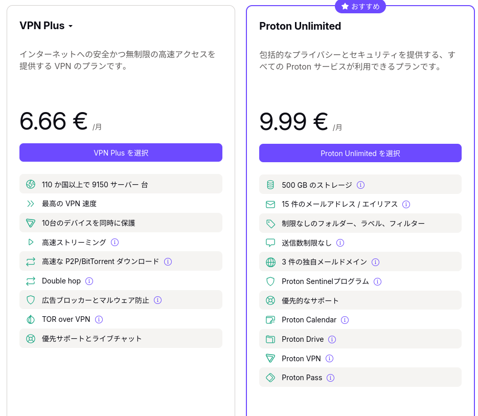
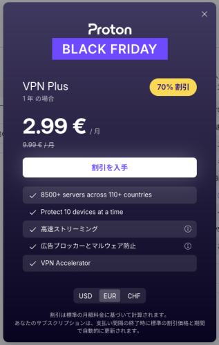
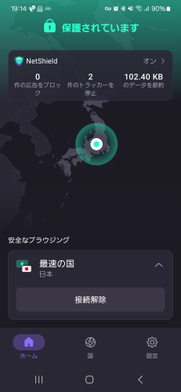
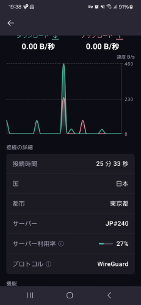

ブラックフライデーなので Proton VPN に加入する

まぁ確かに「闇バイト」なるものには困ったものだが，それでまた通信傍受が云々とか言い出す某政治家には本当に困ったものである。 ぶっちゃけ「サイバー犯罪」に関して警察にできることは犯罪者にもできるし，法で規制しようとしても（法を破るから犯罪者なのであって）割りを食うのは善良で従順な庶民なんだよな。
個人的な話で申し訳ないが，スマホで今使ってる VPN アプリである Freedome は来年で契約が切れて以降は使えなくなるので別のアプリを検討しないといけないのだが，後継の F‑Secure VPN はどう見ても値段に対して機能が釣り合ってない。 まぁ F-Secure は WithSecure に社名変更して B2B にシフトしてしまったので（F-Secure のブランド自体は個人向け用に残すみたいだが），しょうがないところである。
一応，代替手段として以前から Proton VPN を考えていたのだが，折角の機会だし乗り換えてしまおう。
実は Proton Mail のほうは大昔に無料アカウントをとっていたのだが，コミュニケーション手段として（暗号化）電子メール自体をあまり使わなくなったため放置していた。 さっき確認したらアカウントがまだ生きてるみたいなので，これを使って Proton VPN を設定してみよう。 どうやら Proton Mail の無料アカウントで（追加料金なしで）ひとつのデバイスに Proton VPN を設定できるらしい。 さっそく手元のスマホにインストールしてみる。
予想されたことだが，無料版では本当に必要最小限の機能しか提供されないようだ。
- 日本リージョンのAPには繋がる
- マルウェアやトラッカーやアプリ上の広告をブロックする NetShield が使えない
- スプリット（アプリや IP アドレスによって経路を分ける）が使えない
- LAN 上の機器に（VPN を避けて）アクセスできない
- プロトコルの指定ができない
まぁそりゃそうだろう，ということで無料版は諦めてサブスクリプションの料金表を眺めてみる。

Google の各サービスから置き換えたいなら Proton Unlimited もアリかも知れないが，今のところは VPN Plus でいいだろう。 支払い処理を進めていくとブラックフライデーの割引があることに気がつく。

よしよし。 これで買ってしまえ！ 来年のことは来年の私が考える。
というわけで無事に購入し，スマホアプリもフル機能が使えるようになった。

ステータスはこんな感じ。

おー。 WireGuard で繋いでるのか。 今どきの VPN ってこんな感じなんだねぇ。 細かい機能とかはおいおい調べていこう。
とりあえず，来年 Freedome の契約が切れるまでに手持ちの全マシンに仕込んでいかないと。
参考図書

- 暗号化 プライバシーを救った反乱者たち
- スティーブン・レビー (著), 斉藤 隆央 (翻訳)
- 紀伊國屋書店 2002-02-16
- 単行本
- 4314009071 (ASIN), 9784314009072 (EAN), 4314009071 (ISBN)
- 評価
20世紀末，暗号技術の世界で何があったのか。知りたかったらこちらを読むべし！

- 暗号技術入門 第3版 秘密の国のアリス
- 結城 浩 (著)
- SBクリエイティブ 2015-08-25 (Release 2015-09-17)
- Kindle版
- B015643CPE (ASIN)
- 評価
SHA-3 や Bitcoin/Blockchain など新しい知見や技術要素を大幅追加。暗号技術を使うだけならこれ1冊でとりあえず無問題。

- セキュリティはなぜやぶられたのか
- ブルース・シュナイアー (著), 井口 耕二 (翻訳)
- 日経BP 2007-02-15
- 単行本
- 4822283100 (ASIN), 9784822283100 (EAN), 4822283100 (ISBN)
- 評価
原書のタイトルが “Beyond Fear: Thinking Sensibly About Security in an Uncertain World” なのに対して日本語タイトルがどうしようもなくヘボいが中身は名著。とりあえず読んどきなはれ。ゼロ年代当時 9.11 およびその後の米国のセキュリティ政策と深く関連している内容なので，そのへんを加味して読むとよい。

{kind=link}
{kind=link}
{kind=link}